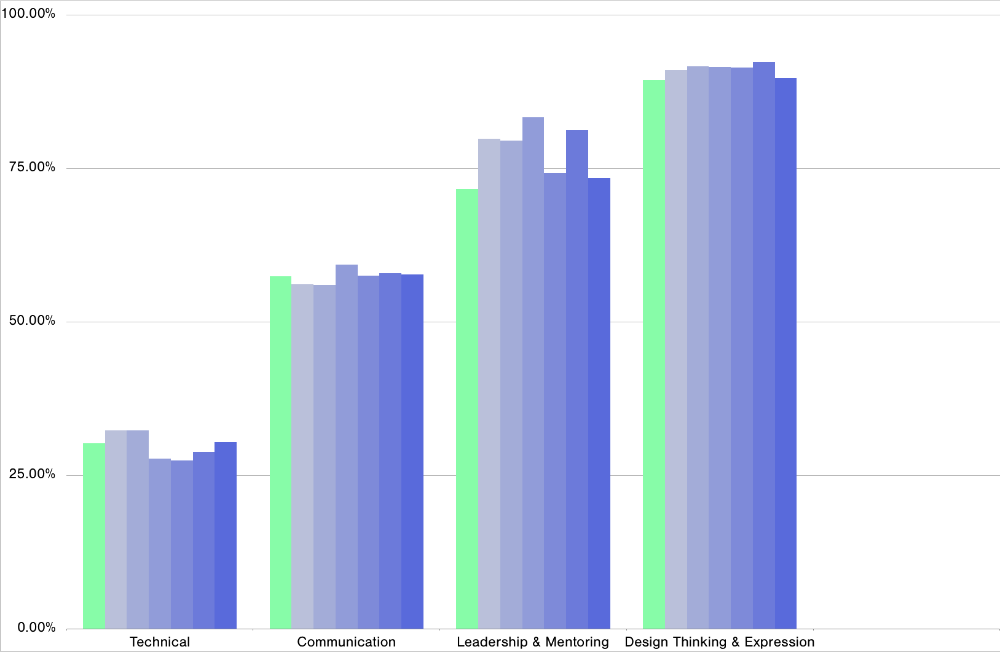
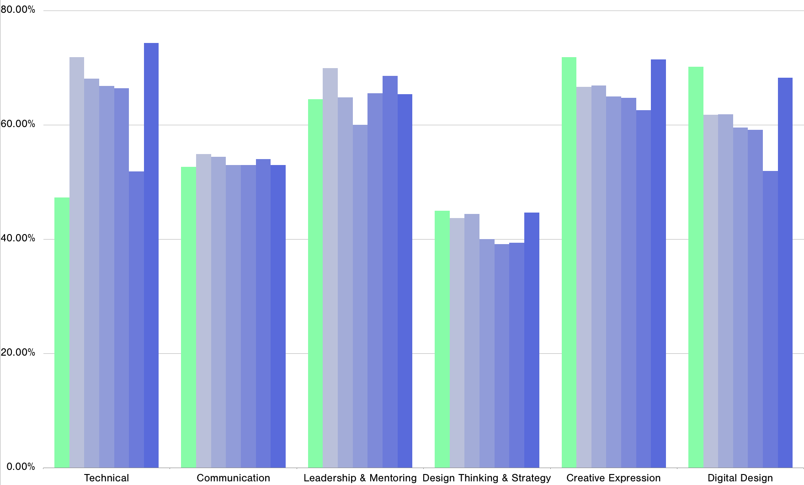
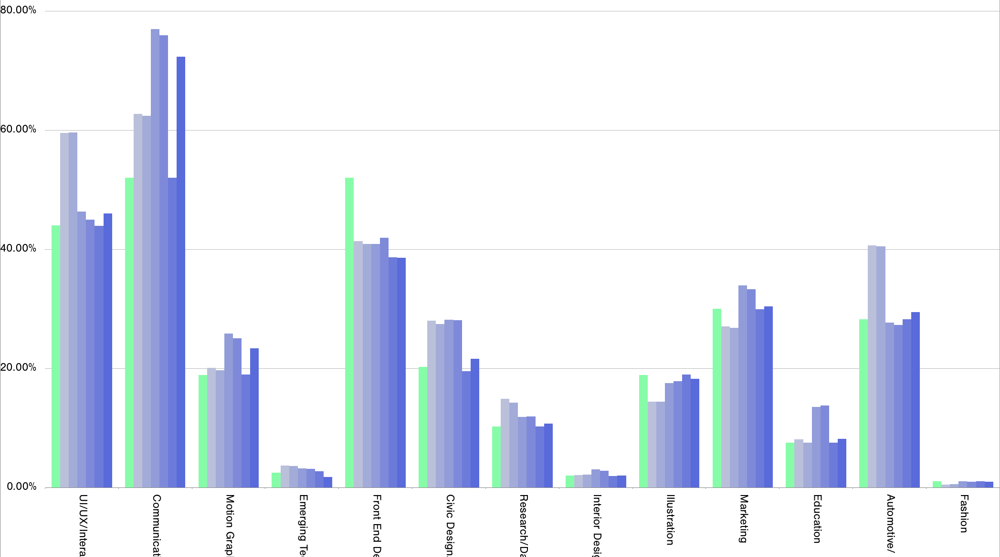
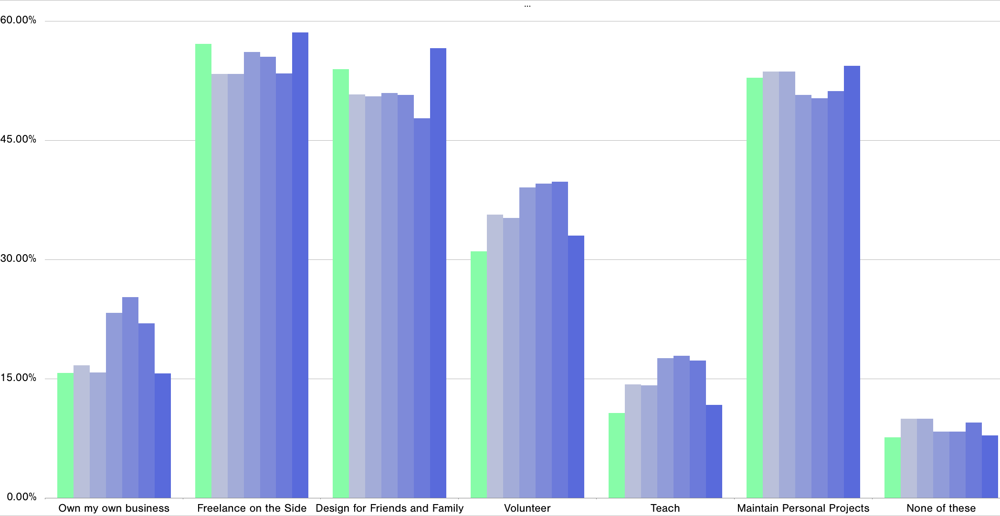
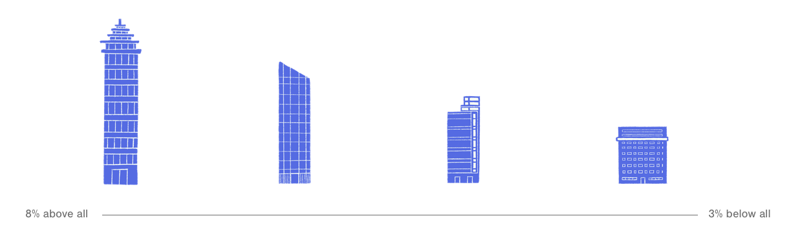
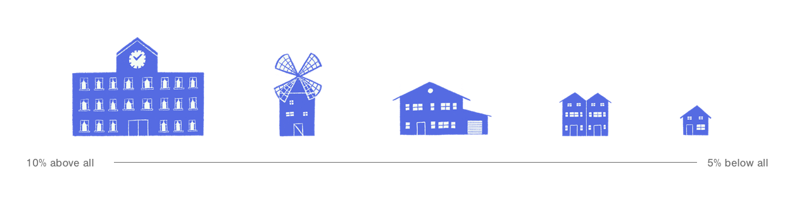
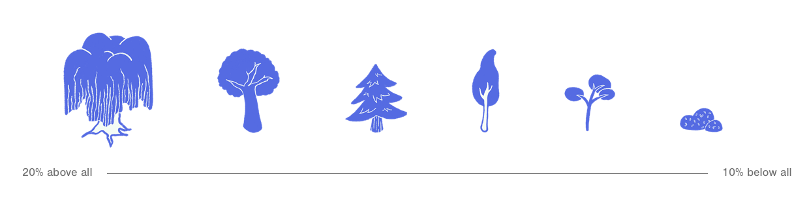
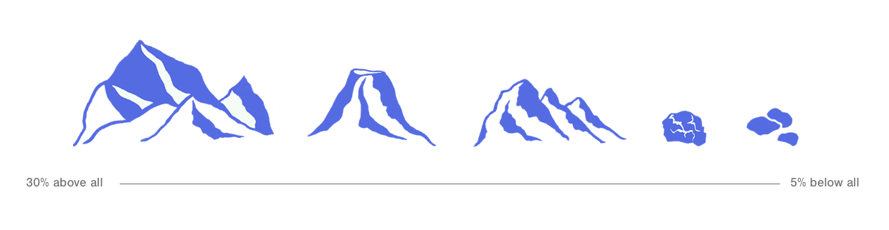

Using the data of over 13,000 designers, the making of this project consisted of analyzing and filtering results in order to indentify trends in designers that reached career successes. Below is the unpacking of this data and why and how each component of the landscape was created.
Data Comparison
With the raw data from the AIGA Design Census conducted in 2017, we identified six distinct success types through questions such as 'what is your income?' and 'how stable is your job,' and compared these success groups responses for the following four questions. We aimed to identify how these groups responses differed from the entire response group.
Entire AIGA Response Group
Salary & Satisfaction Success Group
Salary & Stability Success Group
Longevity & Stability Success Group
Longevity & Satisfaction Success Group
Longevity & Salary Success Group
Stability & Satisfaction Success Group
What skills are you good at?

Aside from my job, I

I'm currently working in

I want to learn more about

Asset Key
After doing initial research on the raw data, we found connections between different success types and answers to specific questions. By data analysis we created a selection of objects for each success type that encoded how closesly ones answers were aligned with the success types' top answers. The smaller the object, the less aligned one's answers were with the success type they chose at the beginning of the experience.
City Assets (Question 1)

Suburb Assets (Question 2)

Forest Assets (Question 3)

Mountain Assets (Question 4)

Placement of Assets on Landscape
By analyzing the data, we filtered down the answers to four specific AIGA Census questions. From that point on, we created a specific map with four quadrants, and sections within those quadrants that represented the different question options.